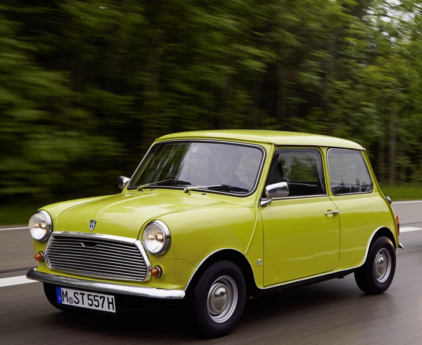
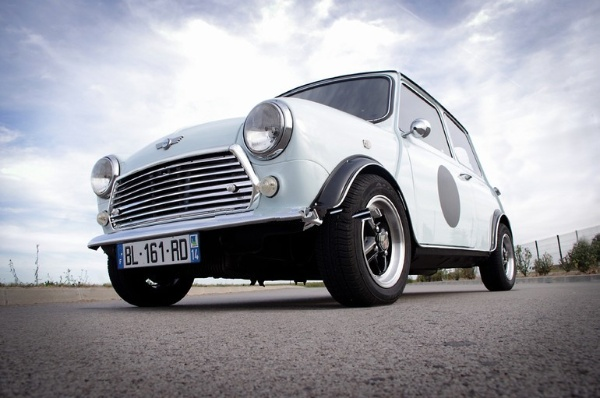
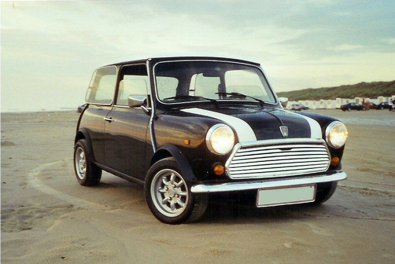
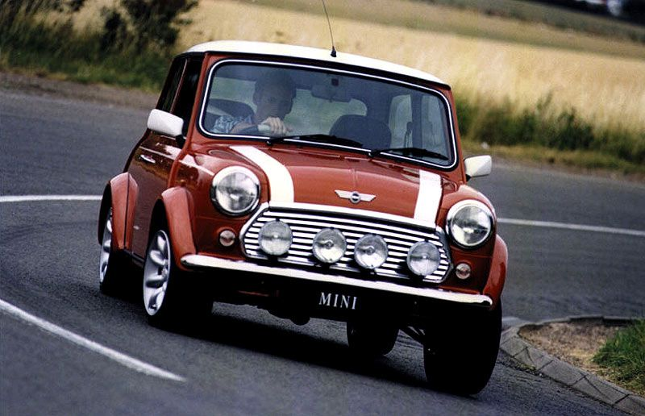

British Leyland Mini 1000

British Leyland Mini 1000
La voiture Mythique d'une Legende passee
Une révolution en matière de mobilité, mais aussi en terme de style.
Enfin en version diesel ou essence,
la citadine Leyland Mini 1000 affirme sa jeunesse dans les moindres détails. A bord de la citadine, laissez vous séduire par
l'émotion d'une conduite plutôt bruyante et allez partout où vous voulez grâce à son fameux 12L aux 100. Plusieurs solutions
pour faire le plein s'offrent à vous : en station essence directement, ou directement à domicile en échange d'un ou deux reins
au vu de l'inflation causée par la guerre en Ukraine.

A l'instar des fans de James Bond au volant de leur ASTON MARTIN DB5, vous aussi vivez le rêve de votre vie et posez vos mains sur le même volant que votre star, Mister Bean, et profitez de ses supensions premium et de ses 42 chevaux !
Nos super offres du moment !
E-British Leyland Mini 100% Electrique
British Leyland Mini 1000 Thermique
A partir de 208€/mois Apres un premier loyer de 2 900€ Bonus ecologique de 5 000€ déduit et 2 000€ supplémentaires selon conditions.
A partir de 208€/mois Apres un premier loyer de 2 900€ Bonus ecologique de 5 000€ déduit et 2 000€ supplémentaires selon conditions.
Une allure sensuelle
Avec sa silhouette distinctive évoquant la sportivité, la PEUGEOT 208 révèle une forte personnalité. Son regard moderne et acéré, porté par ses projecteurs full LED à 3 griffes, captive.
